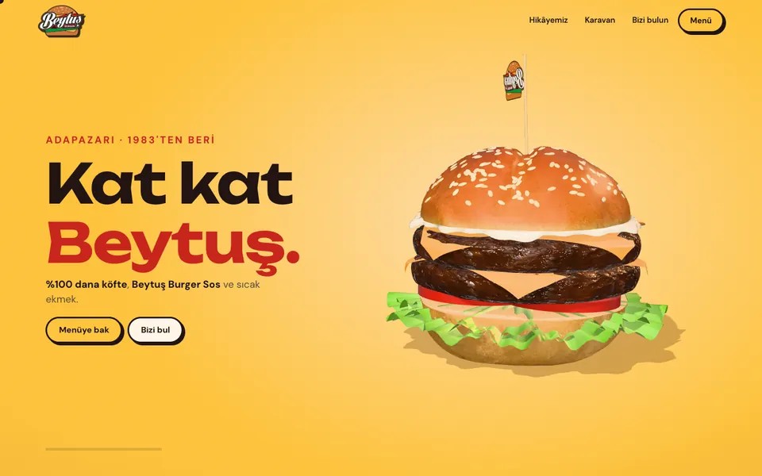
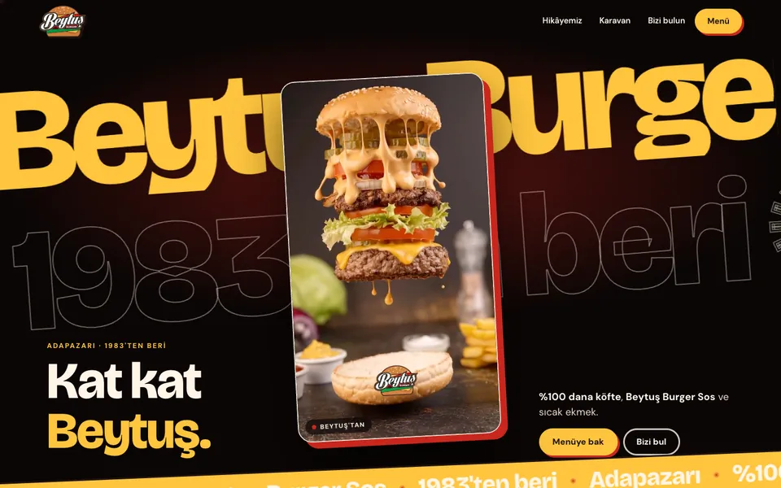
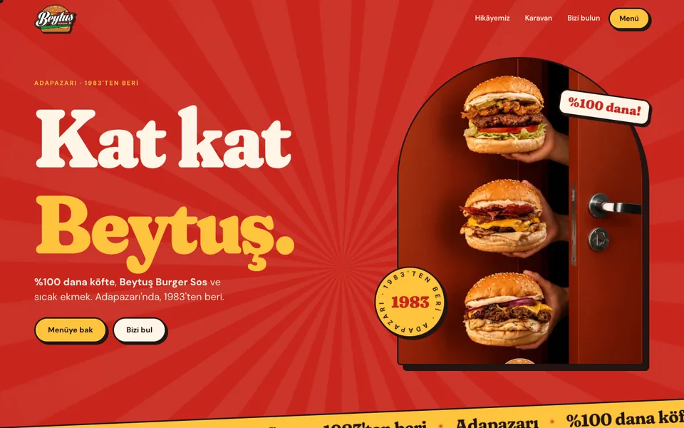

Beytuş Burger · Web sitesi
Üç farklı
Beytuş.
Aynı içerik, üç ayrı karakter. Birini açın, telefonda ve bilgisayarda aşağı kaydırarak gezin.

Öneri 1
Kat Kat
3 boyutlu Beytuş burgeri, gerçek taranmış ekmekle. Her kaydırışta bir sonraki sahneye akıcı geçer: katlar açılır, köfteye, yeşilliğe, sosa yaklaşır, sonra yeniden oturur.
3BKaydırma hikâyesiRenkli stüdyo
Aç →

Öneri 2
Sinema
Gece teması. Arkada dev kayan yazılar, önde Beytuş'un videosu. Kaydırdıkça sahneler kart gibi üst üste biner.
Gerçek videoÜst üste sahnelerKoyu
Aç →

Öneri 3
Pop
Kaydırınca kemerli kapıdan içeri girilir. Bölümler eriyen cheddar, sos ve marul kenarlarıyla burger katı gibi dizilir.
Kapıdan geçişBurger katlarıRetro
Aç →